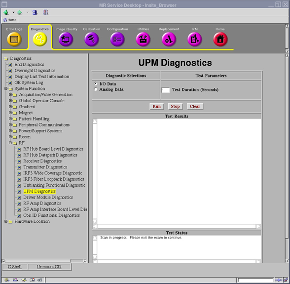

Proprietary to General Electric
Direction 5500113, Rev# 3
Discovery MR750 3.0T Service Methods
Module Version 1.0, Version Date 6/18/09
Proprietary to General Electric |
Diagnostics >> System Function >> RF >> UPM Diagnostics
Diagnostics >> Hardware Location >> PGR Cabinet >> CAM >> UPM Diagnostics
Illustration 1: UPM Diagnostics

The UPM Diagnostic reads the Power Supply information from the UPM board.
Chassis Power Supply
Isolated 5 Volts
FPGA Initialization
Flash Power
RF NB Board and Cable
RF MNS Board and Cable
Unblank Cable
RF NB Negative 12 Volt
RF MNS Negative 12 Volt
Select the appropriate test (see Step for details).
Modify Test Parameters as necessary.
Click the [Run] button.
The I/O Status test checks for the status of the Chassis Power Supply, Temperature of the Chassis Power Supply, Isolated 5 Volts, FPGA Initialization, Flash Power, RF NB Board Presence, RF MNS Board Presence, RF NB Cable Presence, RF MNS Cable Presence, Unblank Cable Presence, RF NB Negative 12Volt Status, RF MNS Negative 12Volt Status.
The Analog Data test reads the Power Supply information from the UPM board every 5 seconds for the specified Test Duration (max 300 secs). No error messages will be logged for failing power supplies since the Applications Code will be logging these errors automatically.
A blue color indicates a normal result. A red color indicates an error.